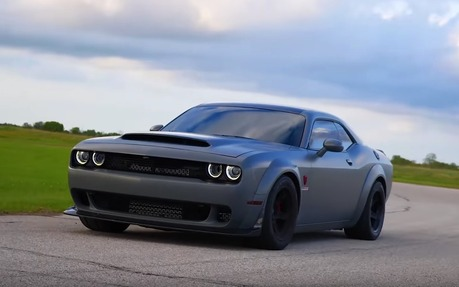

O Challenger é um modelo desportivo de duas portas de tamanho médio da Dodge. A sua produção iniciou-se em 1970. Partilhando a sua plataforma (E-Body) com o Plymouth Barracuda o Dodge Challenger impressionou pela sua vasta gama de motorizações.
A Dodge finalmente apresentou o Challenger na versão SRT Demon 1 70. A mais nova edição do legítimo muscle car americano é simplesmente o modelo mais rápido já produzido pela montadora em todos os 123 anos de história da marca.Vale destacar que a montadora confirmou que essa vai ser a última versão do Challenger produzida com o motor Hemi a combustão, e por isso decidiu criar a série especial de veículos Dodge “Last Call” (“última chamada”, na tradução direta para o português).
O Dodge Challenger SRT Demon 170 alcançou a velocidade de 243km/h, percorrendo este caminho em 8,91 segundos.
Mesmo sendo o mais rápido da lista acelerando de 0 até 100 km/h em 1,66s, o Dodge consegue ser também o mais em conta. Quando abastecido com o combustível E85 (85% de etanol e 15% de gasolina pura), o modelo entrega até 1.039 cv e 130,6 kgfm.
Muscle car mais potente do mundo, produzindo 1.025 cv de potência e 130,6 kgf.m de torque; O carro de produção mais rápido do mundo, indo de 0 a 60 milhas/hora em 1,66 segundo; Veículo mais rápido já produzido nos mais de 100 anos de história da marca Dodge; Primeiro carro de produção de fábrica construído com pneus radiais de arrasto escalonados e para-lamas; Rodas de fibra de carbono leves de duas peças opcionais Lacks Enterprises economizam 11,2 kg de peso; Conjunto de acessórios Direct Connection inclui sistema de pára-quedas e barra de arnês com painéis de acabamento de exclusão de banco traseiro de fibra de carbono correspondentes..